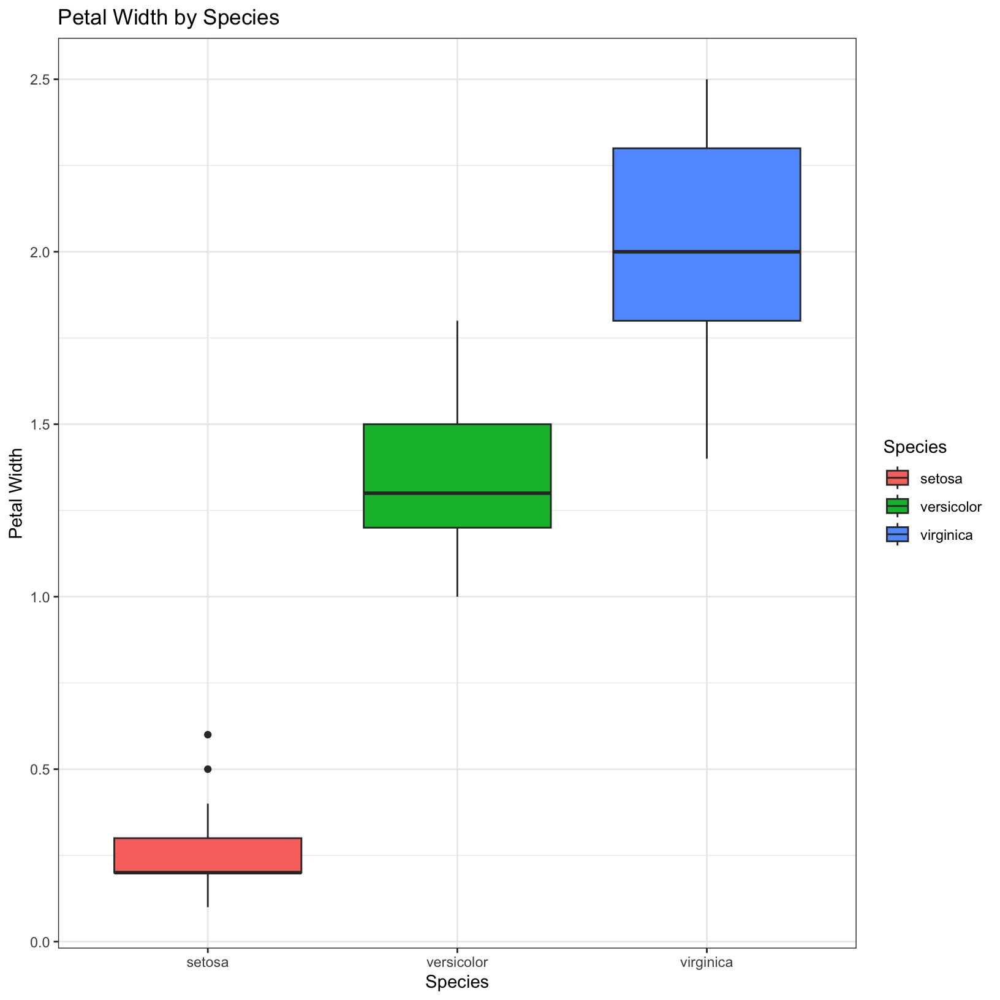

Welcome! We’re excited to give you an introduction to R and RStudio at ABRF. The document you’re looking at is created from an R Markdown document, which is really just a text file with some formatting that lets it run code and display tables and figures inline.
Let’s begin by loading three packages, tidyverse,
rmarkdown, and knitr. The
tidyverse package contains many useful packages for data
manipulation and visualization. We’ll go into more depth on those
functions as the day goes on. The rmarkdown and
knitr packages “knit” the R Markdown document into a
polished web page.
library(tidyverse)── Attaching packages ─────────────────────────────────────── tidyverse 1.3.2 ──
✔ ggplot2 3.4.1 ✔ purrr 1.0.1
✔ tibble 3.1.8 ✔ dplyr 1.1.0
✔ tidyr 1.3.0 ✔ stringr 1.5.0
✔ readr 2.1.4 ✔ forcats 1.0.0
── Conflicts ────────────────────────────────────────── tidyverse_conflicts() ──
✖ dplyr::filter() masks stats::filter()
✖ dplyr::lag() masks stats::lag()library(rmarkdown)
library(knitr)There is a built in data set called iris, that we’ll use
to quickly demonstrate some of what tidyverse can do.
First, let’s take a peek at the first few rows of iris and
format it as a nice table.
kable(head(iris))| Sepal.Length | Sepal.Width | Petal.Length | Petal.Width | Species |
|---|---|---|---|---|
| 5.1 | 3.5 | 1.4 | 0.2 | setosa |
| 4.9 | 3.0 | 1.4 | 0.2 | setosa |
| 4.7 | 3.2 | 1.3 | 0.2 | setosa |
| 4.6 | 3.1 | 1.5 | 0.2 | setosa |
| 5.0 | 3.6 | 1.4 | 0.2 | setosa |
| 5.4 | 3.9 | 1.7 | 0.4 | setosa |
We can summarize the data by using the built-in R function
summary().
summary(iris) Sepal.Length Sepal.Width Petal.Length Petal.Width
Min. :4.300 Min. :2.000 Min. :1.000 Min. :0.100
1st Qu.:5.100 1st Qu.:2.800 1st Qu.:1.600 1st Qu.:0.300
Median :5.800 Median :3.000 Median :4.350 Median :1.300
Mean :5.843 Mean :3.057 Mean :3.758 Mean :1.199
3rd Qu.:6.400 3rd Qu.:3.300 3rd Qu.:5.100 3rd Qu.:1.800
Max. :7.900 Max. :4.400 Max. :6.900 Max. :2.500
Species
setosa :50
versicolor:50
virginica :50
We can also use some functions in the dplyr package to
extract summaries we can define, and then use the kable()
function to format the table as we did above.
phenotypes_by_species = iris %>%
group_by(Species) %>%
summarize(
mean_sepal_length = mean(Sepal.Length),
mean_sepal_width = mean(Sepal.Width),
mean_petal_length = mean(Petal.Length),
mean_petal_width = mean(Petal.Width))
kable(phenotypes_by_species)| Species | mean_sepal_length | mean_sepal_width | mean_petal_length | mean_petal_width |
|---|---|---|---|---|
| setosa | 5.006 | 3.428 | 1.462 | 0.246 |
| versicolor | 5.936 | 2.770 | 4.260 | 1.326 |
| virginica | 6.588 | 2.974 | 5.552 | 2.026 |
Finally, it doesn’t take much code to generate a figure showing how different the petal widths can be among different species of irises. We do familiar things like decide what should be on the x-axis, y-axis, and what kind of plot we want. We can also change the axis labels, the plot title, and much more.
ggplot(iris, aes(x = Species, y = Petal.Width, fill = Species)) +
geom_boxplot() +
theme_bw() +
labs(title = 'Petal Width by Species', x = 'Species' , y = 'Petal Width')
R Markdown enables you to build easy to read reports about your data that contain narrative, code, and results, all as a nicely packaged HTML or PDF document that can easily be shared with collaborators.